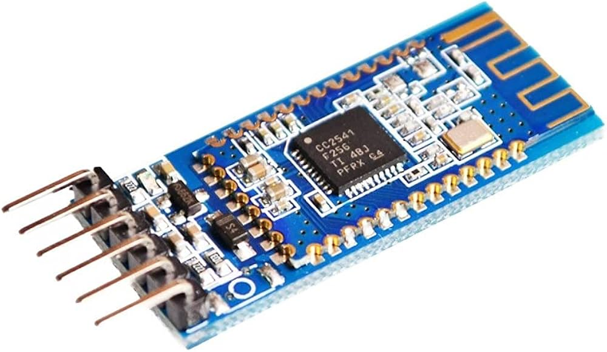
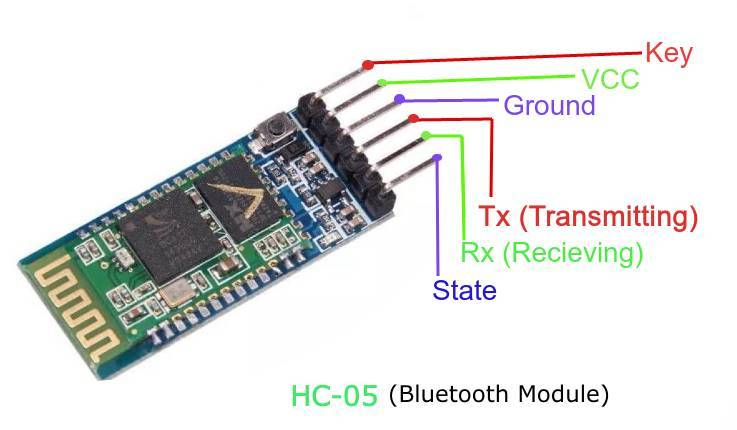
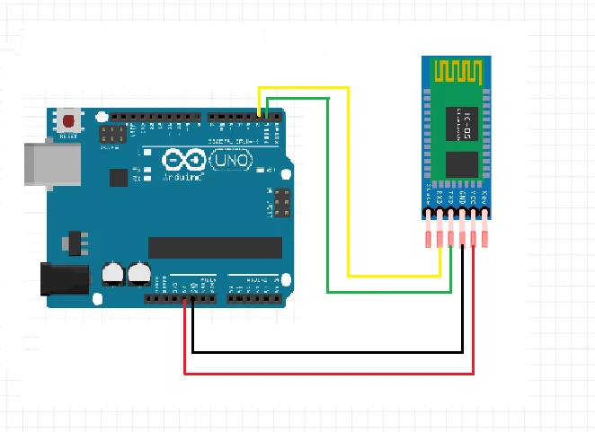

Introduction
Ever wanted to add wireless communication to your projects? The HC-05 Bluetooth module is perfect for the job! This module allows you to establish a serial communication connection between your microcontroller (like Arduino) and any Bluetooth-enabled device, such as a smartphone or computer. In this guide,you will learn everything you need to know about the HC-05 Bluetooth module.
1. What is a Bluetooth Module?
A Bluetooth module is a device that enables wireless communication between two Bluetooth-enabled devices. It allows data to be transmitted over short distances without the need for wires. The HC-05 is a popular Bluetooth module used for serial communication.
2. Overview of HC-05 Bluetooth Module
The HC-05 Bluetooth module is versatile and easy to use, making it an excellent choice for adding Bluetooth functionality to your projects. It supports both master and slave modes, enabling various communication setups.
Key Features
- Bluetooth Specification: V2.0+EDR (Enhanced Data Rate)
- Frequency: 2.4GHz ISM band
- Modulation: GFSK (Gaussian Frequency Shift Keying)
- Range: Up to 10 meters
- Operating Voltage: 3.3V to 5V
- Serial Communication: UART (Universal Asynchronous Receiver-Transmitter)
3. Pin Configuration
The HC-05 Bluetooth module typically has six pins. Here’s what each pin does:
Pins Description
- EN (Enable): Used to toggle between AT command mode and data mode.
- VCC: Connects to the power supply (3.3V to 5V).
- GND: Connects to the ground.
- TXD: Transmits serial data.
- RXD: Receives serial data.
- STATE: Indicates the module’s state (connected or not).
4. How It Works
The HC-05 module works by establishing a serial communication link between two devices. It can operate in two modes:
- Data Mode: Used for normal communication between devices.
- AT Command Mode: Used to configure the module’s settings (e.g., changing the name, baud rate, or role).
Operation Steps
- Power On: Connect the module to the power supply.
- Pairing: Pair the module with a Bluetooth-enabled device.
- Communication: Exchange data between the paired devices.
5. Wiring and Connections
Let’s get you connected to the HC-05 Bluetooth module. Here’s how you can hook it up to an Arduino:
Components Needed
- HC-05 Bluetooth Module
- Arduino Board
- Connecting Wires
Wiring Diagram
- Connect VCC to the 5V pin on the Arduino.
- Connect GND to the ground pin on the Arduino.
- Connect TXD to the RX pin on the Arduino (e.g., pin 10).
- Connect RXD to the TX pin on the Arduino (e.g., pin 11).
- Connect EN to 3.3V (optional, used for entering AT command mode).
Example Schematic
Arduino HC-05 Bluetooth Module
------------------------------------
5V -> VCC
GND -> GND
Pin 10 -> TXD
Pin 11 -> RXD
3.3V -> EN (optional)

6. Example Applications
The HC-05 Bluetooth module can be used in a wide range of applications. Here are some examples:
Wireless Control
- Remote Control: Control robots, cars, or other devices wirelessly.
- Home Automation: Control lights, appliances, or other home systems from your smartphone.
Data Transmission
- Sensor Data: Send sensor data to your phone or computer for monitoring and analysis.
- Wireless Communication: Establish communication between two microcontrollers.
7. Code Examples for Arduino
Let’s write some code to communicate with the HC-05 Bluetooth module using Arduino. Below is a simple example to get you started:
Basic Example to Send and Receive Data
#include <SoftwareSerial.h> // SoftwareSerial-documentations
// Define pins for software serial communication
SoftwareSerial Bluetooth(10, 11); // RX, TX
void setup() {
// Start serial communication with the computer
Serial.begin(9600);
// Start software serial communication with the Bluetooth module
Bluetooth.begin(9600);
Serial.println("Bluetooth Module HC-05 is ready");
}
void loop() {
// Check if data is available on the Bluetooth module
if (Bluetooth.available()) {
char data = Bluetooth.read(); // Read data from the Bluetooth module
Serial.print("Received: ");
Serial.println(data); // Print the received data to the Serial Monitor
}
// Check if data is available on the Serial Monitor
if (Serial.available()) {
char data = Serial.read(); // Read data from the Serial Monitor
Bluetooth.print(data); // Send data to the Bluetooth module
}
}
8. Troubleshooting
Common Issues
- No Response: Ensure the module is powered correctly and the connections are secure.
- Unable to Pair: Check if the module is in discoverable mode and the device's Bluetooth is enabled.
- Erratic Data: Ensure the baud rates of the Bluetooth module and the microcontroller match.
This guide should help you get started with the HC-05 Bluetooth module in your projects. Have fun adding wireless communication and creating exciting Bluetooth-enabled devices! If you have any questions, feel free to ask. Happy tinkering!